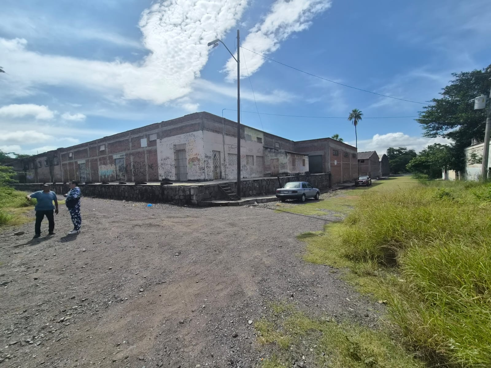

7,178 m² · 0.72 ha
- Perímetro ≈ 433 m
- Frente a vía férrea ≈ 161 m
- Costado oriente ≈ 53 m
- Frente interior ≈ 131 m
- Escalones: 16 · 22 · 50 m

Colima · El Tívoli · Vía férrea
Antiguas instalaciones del ferrocarril: tres polígonos juntos, naves existentes y un frente privilegiado a la vía. Listo para quien busca escala, ubicación y carácter.
Ubicación
El predio se asienta sobre las antiguas instalaciones del tren, entre la calle Ferromex, Carraleros y Progreso, en la zona El Tívoli / Col. Riva Palacio, ciudad de Colima.
Por qué destaca
No es un lote aislado: son más de dos hectáreas dentro de la mancha urbana, con naves de tabique, patio amplio y colindancia directa a la vía férrea. Alrededor hay vivienda, parque, servicios de salud y avenidas principales.
El conjunto admite usos de bodega, recinto, desarrollo mixto o reconversión del patrimonio industrial, según el proyecto del comprador.
Superficie y medidas
Las superficies y linderos se calcularon a partir del archivo KMZ de polígonos. Sirven para apreciar la escala; el levantamiento formal se confirma en escrituras y plano topográfico.
7,178 m² · 0.72 ha
940 m² · 0.09 ha
12,305 m² · 1.23 ha
Total conjunto ≈ 20,422 m² (2.04 hectáreas). Colores iguales a los del KMZ: amarillo, rojo y naranja.
Colindancias
Las colindancias que más pesan en valor: vía férrea, calles internas, parque y tejido urbano consolidado.
Vía férrea Ferromex y la estación de ferrocarril de Colima. Frente largo, visible y difícil de replicar en la ciudad.
Jardín El Tívoli, colonia Quinta El Tívoli y Parque Hidalgo. Zona arbolada, residencial y de esparcimiento.
Calle Ferromex, ALFER (cercas perimetrales) y la colonia Costeño. Acceso vehicular claro al predio.
Calle Carraleros, Normalistas de México y el corredor de Av. Rey Colimán, con el Instituto Estatal de Cancerología a pocos minutos.
Mapa del predio
El mapa carga el mismo trazo del archivo KMZ. Puedes cambiar a mapa de calles, centrar cada polígono o descargar el KMZ para abrirlo en Google Earth.
Si el mapa no aparece al abrir el archivo directo, sirve la carpeta con un servidor local (por ejemplo python -m http.server).


Presentación
Todas las imágenes del directorio, en presentación a pantalla. Usa flechas, el teclado o las miniaturas.
Siguiente paso
Con gusto compartimos escrituras, medidas oficiales y condiciones de venta. El KMZ ya está en esta página para que el predio se aprecie en Google Earth o en el mapa.